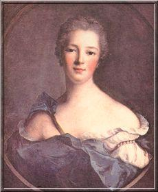

Quel est le triste sort des malheureux Français!
O unfortunate French, how cruel is your fate!
A poem on Prince Charles's expulsion
From MS. 649, p. 16, kept at the Bibliothèque historique de la ville de Paris
and from the MSS at Towneley Hall, published in A. B. Grosart's "English Jacobite Ballads, Songs and Satires", p.11, 1877
|
To the text:
Like in the precedent song the subject matter of this ode is the shameful abandon by the French King Louis XV of the Stuart cause, pursuant to the Treaty of Aix-la-Chapelle and Prince Charles's expulsion. This ode appears in several chansonniers and other sources, without important variations in the text. See, for example, Bibliothèque historique de la ville de Paris, ms. 649, p.13-15. It is quoted here from "Vie privée de Louis XV, ou principaux événements, particularités et anecdotes de son règne" (Paris, 1781), II, 372-374. No tune to it is known. |
 La Marquise de Pompadour |
A propos du texte:
Comme dans le précédent chant , le sujet de cette ode est le honteux abandon par Louis XV de la cause des Stuart, en application d'une clause du traité d'Aix-la-Chapelle et l'expulsion du Prince Charles. Cette ode apparaît chez de nombreux chansonniers et autres sources sans variations notables dans le texte. On la trouve par exemple dans le manuscrit conservé à la Bibliothèque de la Ville de Paris, référence 649, p.13-14. Le présent texte est celui de l'ouvrage "Vie privée de Louis XV, ou principaux événements, particularités et anecdotes de son règne" (Paris, 1781), II, 372-374. Pas de timbre connu. |

|
1. Quel est le triste sort des malheureux Français!
Réduits à s'affliger dans le sein de la paix! Plus heureux et plus grands au milieu des alarmes, Ils répandaient leur sang, mais sans verser de larmes. 2. Qu'on ne nous vante plus les charmes du repos! Nous aimons mieux courir à des périls nouveaux, Et vainqueurs avec gloire ou vaincus sans bassesse, N'avoir point à pleurer de honteuse faiblesse. 3. Edouard [1] fugitif a laissé dans nos cœurs Le désespoir affreux d'avoir été vainqueurs. A quoi nous servait-il d'enchaîner la victoire? Avec moins de lauriers nous aurions plus de gloire. 4. Et contraints de céder à la loi du plus fort, Nous aurions pu du moins en accuser le sort. Mais trahir Edouard, lorsque l'on peut combattre! Immoler à Brunswick [2] le sang de Henri Quatre! 5. Et de Georges vaincu subir les dures lois! O François! O Louis! O Protecteurs des rois! Est-ce pour les trahir qu'on porte ce vain titre? Est-ce en les trahissant qu'on devient leur arbitre? 6. Un roi qui d'un héros se déclare l'appui, Doit l'élever au trône ou tomber avec lui. Ainsi pensaient les rois que célèbre l'histoire, Ainsi pensaient tous ceux à qui parlait la gloire. 7. Et qu'auraient dit de nous ces monarques fameux, S'ils avaient dû prévoir qu'un roi plus puissant qu'eux, Appellant un héros au secours de la France, Contractant avec lui la plus sainte alliance, 8. L'exposerait sans force aux plus affreux hasards, Aux fureurs de la mer, des saisons et de Mars Et qu'ensuite unissant la faiblesse au parjure, Il oublierait serments, gloire, rang et nature? 9. Et servant de Brunswick le système cruel, Traînerait enchainé le héros à l'autel? Brunswick, te faut-il donc de si grandes victimes? O ciel, lance tes traits; terre, ouvre tes abîmes! 10. Quoi, Biron, [3] votre roi vous l'a-t-il ordonné? Edouard, est-ce vous d'huissiers environné? Est-ce vous de Henri le fils digne de l'être? Sans doute. A vos malheurs j'ai pu vous reconnaître. 11. Mais je vous reconnais bien mieux à vos vertus. O Louis! vos sujets de douleur abattus, Respectent Edouard captif et sans couronne: Il est roi dans les fers, qu'êtes-vous sur le trône? 12. J'ai vu tomber le sceptre aux pieds de Pompadour! [4] Mais fut-il relevé par les mains de l'amour? Belle Agnès [5], tu n'es plus! Le fier Anglais nous dompte. Tandis que Louis dort dans le sein de la honte, 13. Et d'une femme obscure indignement épris, Il oublie en ses bras nos pleurs et nos mépris. Belle Agnès, tu n'es plus! Ton altière tendresse Dédaignerait un roi flétri par la faiblesse. 14. Tu pourrais réparer les malheurs d'Edouard En offrant ton amour à ce brave Stuart. Hélas! pour t'imiter il faut de la noblesse. Tout est vil en ces lieux, ministres et maîtresse: 15. Tous disent à Louis qu'il agit en vrai roi; Du bonheur des Français qu'il se fait une loi! Voilà de leurs discours la perfide insolence! Voilà la flatterie, et voici la prudence! 16. Peut-on par l'infamie arriver au bonheur? Un peuple s'affaiblit par le seul déshonneur. Rome, cent fois vaincue, en devenait plus fière, Et ses plus grands malheurs la rendaient plus altière. 17. Aussi Rome parvint à dompter l'univers. Mais toi, lâche ministre, [6] ignorant et pervers, Tu trahis ta patrie et tu la déshonores! Tu poursuis un héros que l'univers adore! 18. On dirait que Brunswick t'a transmis ses fureurs; Que ministre inquiet de ses justes terreurs Le seul nom d'Edouard t'épouvante et te gêne. Mais apprend quel sera le fruit de cette haine: 19. Albion sent enfin qu'Edouard est son roi, Digne, par ses vertus, de lui donner la loi. Elle offre sur le trône asile à ce grand homme, Trahi tout à la fois par la France et par Rome! 20. Et bientôt les Français, tremblants, humiliés, D'un nouvel Edouard viendront baiser les pieds. Voila les tristes fruits d'un olivier funeste Et de nos vains lauriers le déplorable reste! [7] Source: the MSS at Towneley Hall, published in A. B. Grosart's "English Jacobite Ballads, Songs and Satires", p.11, 1877 |
1. O unfortunate French, how cruel is your fate!
The reign of Peace has set your minds in a strange state. Happier and greater among dangers and fears As long as your blood shed was not mingled with tears. 2. To your ears let no song resound in praise of rest! You prefer in new risks to be put to the test, Gallantly to succumb, or conquer in glory, Rather than lament your weakness so shamefully. 3. Young Prince Charles [1], when he went in exile, left your hearts In hideous despair to play the victor's part. What was the use of your chaining up Victory? With less laurels you would have gathered more glory. 4. If to a stronger foe you had been forced to yield You could maintain that God Himself your fate had sealed! But to give up Edward and not fight like a lion! To the Guelph [2] sacrifice Henry the Fourth's scion! 5. And by the subdued George to be subdued in turn! O Kings Francis, Louis, Shields of the kings, return! You never styled yourselves thus to cheat them basely Or to arbitrate them with base disloyalty! 6. A king when he declares himself a hero's prop Must raise him to a throne or with him he must drop. That was the way of kings famous in history. That was the view of all truly fond of glory. 7. They are ashamed of you, those kings who consider A monarch who pretends to be still mightier, Who has begged a hero's support for his country, And gave his word to be forever his ally, 8. Who has exposed him to the most dreadful plights, The fury of the main, of the gales, of the fights, Yet turned into a weak traitor to his own oath, Oblivious of his fame, his rank, his kind, his troth. 9. Who could bear to be checked by Brunswick's ruthless reins And drove to the altar the hero put in chains? Do you deem Brunswick worth of so great an abuse? O Heaven, shoot your darts, Hell, turn your mastiffs loose! 10. Biron [3], was it your king who gave you such orders That Edward should be seized by law-court officers, Edward who is worthy to be King Henry's son? I knew that it was him by the wrong to him done. 11. But I know him far more by his outstanding pluck. O Louis! Your subjects downcast by his bad luck Honour Edward captive and deprived of his crown. He is King in fetters, are you king on your throne? 12. The sceptre once fell to the feet of Pompadour [4] But never was picked up by the hands of Amour. Fair Agnes [5], where are you? The proud English rule us Whilst Louis is slumbering in his odious recess, 13. Shamefully enamoured of a girl but lowborn In whose arms he forgets our wailing and our scorn. Fair Agnes, where are you? Your haughty affection Would have despised a king for such abdication. 14. Maybe you'd have made good for Edward's misfortune By offering him your love to his courage attuned. Alas, to do like you, one must have nobleness. But today all is vile, ministers and mistress: 15. All assert to Louis he behaves like a king, The welfare of the French outdoes everything! Such is the perfidious insolence of their speech Where flattery mingles with prudence that they preach. 16. Did ever infamy beget joy of living? Dishonour is the cause of peoples' weakening. Rome, often defeated, grew all the more lofty; Her greatest hardships made her all the more haughty. 17. Thus Rome succeeded in taming the universe, But you, base minister [6], ignorant and perverse, You betray your country and you pull her fame down By harrying a Prince of so great a renown! 18. Is Brunswick's lunacy catching all kings in turns? Are you liable for his justified concerns? At the name of Edward you quiver and you quake. But due to your hatred your own fate is at stake. 19. Britain shall know at last that Edward is her king Worthy by his virtue to impose his ruling. She shall welcome at last this great man on the throne Who was abandoned both by France and by Rome! 20. And soon the trembling French, humiliated will greet The new King of Britain, Edward, and kiss his feet. People with your fateful olive branch, grind your teeth Though your brow be girded by a vain laurel wreath! [7] (Trad. Christian Souchon (c) 2011) |
|
[1]
Charles Edward
: Grandson to James II, King of England, ousted by the Prince of Orange, his son-in-law. He was known in France by his second Christian name "Edward". The King of France, Henry IV was his great-great-grandfather.
[2] George of Brunswick-Hanover : [i.e. George II of Great Britain]. [3] Biron : Colonel of the Gardes-Françaises. [4] Marquise de Pompadour : (1721 - 1764) née Poisson, wife of Le Normant d'Etioles and mistress of Louis XV. Whether she had political influence is not clear. [5] Agnes Sorel : (1420 - 1450), was King Charles VII's favourite between 1444 and 1449, overshadowing the Queen Mary of Anjou and playing a decisive part in the government of the kingdom. Unlike Jeanne Poisson, she was a noblewoman. [6] Base minister : M. d'Argenson, War Minister. [7] Soon the trembling French : The prediction did not come true. Prince Charles, after he settled in Rome, lost every possibility to regain his throne. |
[1]
Charles Edouard
: Petit-fils de Jacques II, Roi d'Angleterre, détrôné par le Prince d'Orange, son gendre. On le désignait en France par son second prénom, Edouard. Le roi de France Henri IV était son arrière-arrière grand-père.
[2] Georges de Brunswick-Hanovre : [c. à d. Georges II de Grande Bretagne]. [3] Biron : Colonel des gardes-françaises. [4] Marquise de Pompadour : (1721 - 1764) née Poisson, femme de Le Normant d'Etioles et maîtresse de Louis XV (as from March 1745). Il n'est pas certain qu'elle ait influencé le roi en matière politique [5] Agnès Sorel : (1420 - 1450), fut la favorite du roi Charles VII entre 1444 et 1449, éclipsant la reine Marie d'Anjou. Elle eut une influence décisive sur la politique du royaume. Contrairement à Jeanne Poisson, elle était de (petite) noblesse. [6] Lâche ministre : M. d'Argenson, Ministre de la guerre. [7] Et bientôt les Français... : La prédiction n'a pas eu lieu. Le Prince Edouard, retiré à Rome, a perdu toute espérance de remonter sur le trône. |
|
|
|